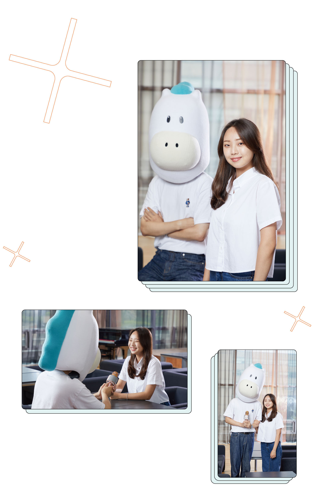

나만의 성장 스토리를 만드는 것이 중요해요
전기공학부 21학번
고윤정
숭실대의 귀여운 마스코트 슝슝이가 예비 숭실인들을 대신해 수시 합격자들을 만났습니다. 첫 순서는 SSU미래인재전형 합격자 전기공학부 21학번 고윤정 학생입니다. 고윤정 학생이 전하는 합격 비결은 ‘나만의 스토리를 만드는 것’입니다. 성적 변화나 활동 내용, 수상 실적 등 진로를 찾기 위한 노력이 드러난 성장 스토리를 쌓는 데 힘쓴다면 원하는 결과를 얻을 수 있을 것이라 이야기합니다.
Q. SSU미래인재전형을 택한 이유는 무엇이었나요?
저를 가장 잘 표현할 수 있는 전형이라고 생각했습니다. 다양한 활동 경험으로 진로를 찾아가는 과정에서 배운 점과 어려움을 극복한 방법 등 저의 성장 과정을 가장 생생하게 전달할 수 있는 전형이라고 생각해 선택하게 되었습니다.
Q. 전형 준비를 위해 수험생 시절 중점을 두고 준비하고 노력한 것은 무엇인가요?
가장 중점을 두었던 부분은 바로 ‘나만의 스토리를 만드는 것’이었습니다. SSU미래인재전형의 경우 고등학교 3년 동안 있었던 성적 변화나 활동 내용, 수상 실적 등 다양한 면을 보기 때문에 진로를 찾기 위해 스스로 어떤 노력을 해왔는지를 잘 보여주는 것에 집중했습니다. 고등학교 1학년 때는 공학뿐만 아니라 인문학이나 자연과학 관련 활동도 병행하며 흥미를 가질 수 있는 분야를 찾고자 노력했습니다. 이러한 시행착오가 일련의 성장 과정이자 저만의 스토리가 되었고, 융합형 인재로서의 소양도 보여줄 수 있었습니다.
Q. SSU미래인재전형을 염두에 두고 준비하기 시작한 때는 언제인가요?
단순히 공부를 열심히 해서 성적으로 승부를 보기보다는 여러 활동을 병행하며 나만의 꿈을 찾아가는 학창시절을 보내고 싶었습니다. 그래서 고등학교 입학할 때부터 저의 성장 스토리를 보여줄 수 있는 SSU미래인재전형을 준비하기 시작했습니다. 내신은 시험 3주 전부터 꾸준히 준비하며 학년이 올라갈수록 더욱 신경을 썼습니다. 그 외의 기간에는 수능 공부 및 진로를 위한 다양한 활동을 했습니다.
Q. 입시를 준비하며 가장 어려웠던 부분은 무엇이었나요?
입시는 자신과의 싸움이라는 말이 있듯이 스스로 확신이 들지 않을 때는 힘들었습니다. 남들과 비교하며 자신을 갉아먹었던 순간도 있었습니다. 그럴 때는 오히려 너무 많은 생각이 독이 되는 것 같아 가볍게 산책하며 머릿속을 비우곤 했습니다. 또 현재 내가 해야 할 일들에 집중해 잡념을 떨쳐내며 버텨냈습니다.
Q. 예비 후배들에게 한 말씀 부탁드립니다.
“후회를 남기지 말자.” 입시 준비하면서 힘들고 포기하고 싶었던 순간마다 되새겼던 말입니다. 미래의 결과를 마음대로 결정할 수는 없습니다. 하지만 지금 이 순간에 멈춰 설 지,앞으로 나아갈지는 오로지 본인만이 결정할 수 있습니다. 저는 입시 생활을 돌아봤을 때 스스로 부끄럽지 않도록, 적어도 후회는 남기지 않기 위해 매 순간 최선을 다하며 노력했습니다. 여러분 역시 입시 준비 중 생기는 크고 작은 어려움에 많이 지치기도 하고, 좌절할 때도 있을 것입니다. 하지만 미래의 결과에 너무 불안해하기보다는 당장 해야 할 일에 최선을 다하다 보면 결국에는 원하는 목표에 닿을 것이라고 믿어요. 남은 입시 생활 을 후회 없이 끝마치시기를 바랍니다.
고윤정 학생의합격 포인트 3
1. 나만의 성장 스토리를 만드는 것
2. 적성과 흥미에 맞는 다양한 활동
3. 현재에 최선을 다하기